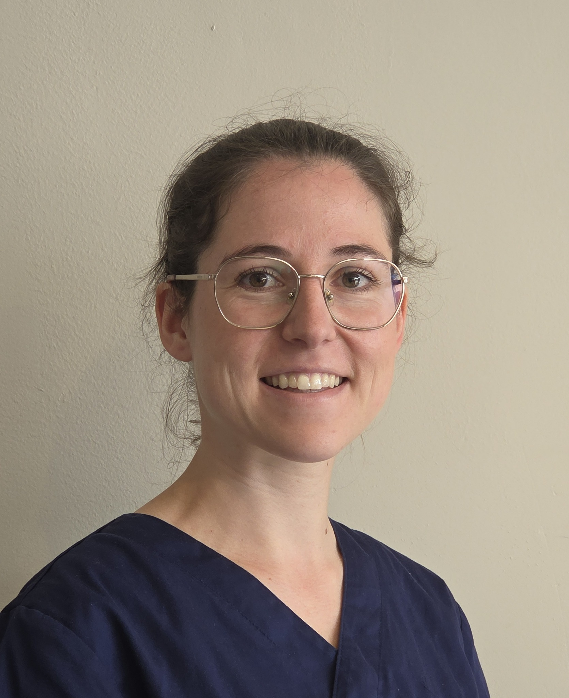

Algemene tandheelkunde
Algemene tandheelkundige zorg voor volwassenen en kinderen, met aandacht voor preventie en een duurzame mondgezondheid.
Persoonlijke en professionele tandheelkundige zorg voor volwassenen en kinderen.
Bij Tandartspraktijk Pulle staan persoonlijke zorg, vertrouwen en duidelijke communicatie centraal. De praktijk wordt bewust kleinschalig gehouden met twee behandelruimtes, zodat er voldoende tijd en aandacht is voor iedere patiënt.

In 2017 behaalde ik mijn diploma als algemeen tandarts. Na mijn afstuderen deed ik waardevolle ervaring op in Dentius Herzele en Dentius Gent-West.
In 2023 verhuisde ik van Gent naar Zandhoven. Sindsdien ben ik werkzaam in Tandartspraktijk Lammerenberg, waar ik steeds met veel plezier patiënten heb behandeld en begeleid.
Na deze jaren ervaring voelde het als het juiste moment voor een nieuwe uitdaging. Daarom start ik in augustus 2027 mijn eigen praktijk: Tandartspraktijk Pulle.
Met twee behandelruimtes kies ik bewust voor een praktijk die niet te groot wordt. Zo kan persoonlijke zorg steeds centraal blijven staan.
Van preventieve zorg tot esthetische en prothetische oplossingen.
Algemene tandheelkundige zorg voor volwassenen en kinderen, met aandacht voor preventie en een duurzame mondgezondheid.
Kronen en facetten voor een natuurlijke, harmonieuze glimlach en een mooie restauratie van beschadigde tanden.
Prothetische oplossingen op maat, afgestemd op comfort, functie en persoonlijke wensen.
Kronen en bruggen op implantaten en andere prothetische voorzieningen op implantaten.
Voor wortelkanaalbehandelingen en uitgebreide tandvleesbehandelingen (parodontologie) werken wij samen met collega-tandartsen en specialisten. Wanneer dergelijke zorg nodig is, zorgen wij graag voor een gepaste doorverwijzing.
De nieuwe praktijk wordt ingericht met twee behandelruimtes. Door bewust kleinschalig te werken, willen we een rustige omgeving creëren waarin patiënten zich gehoord en comfortabel voelen.
De praktijk opent in augustus 2027. Tot die tijd kunt u ons bereiken via e-mail voor vragen over de toekomstige praktijk.